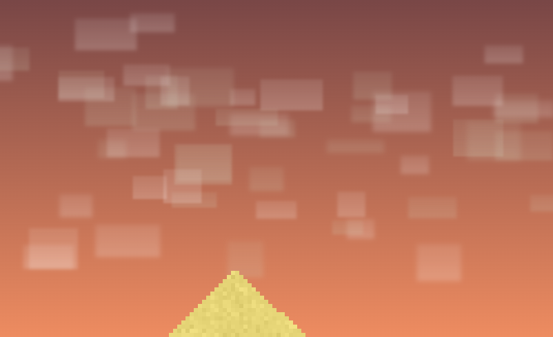
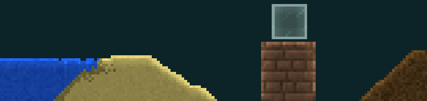
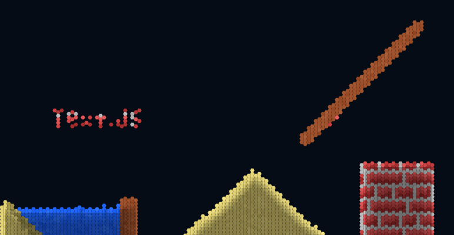
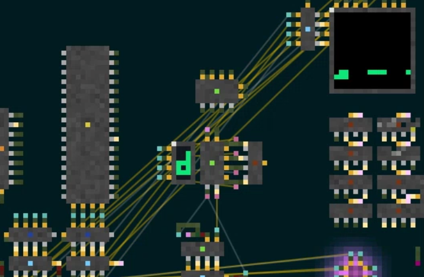
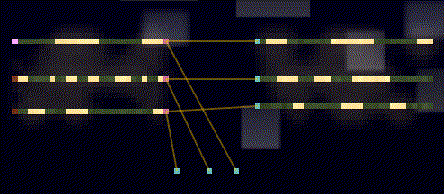

My Sandboxels Mods

Clouds Mod (clouds.js)
Adds floating clouds in the background, sky.js recommended to run alongside it.
View Code
Occlusion Mod (occlusion.js)
This mod adds a Terraria-style lighting system to Sandboxels, creating realistic shadow and light occlusion effects. Deeper pixels are darkened.
View CodeBetter flames (nicer_flame.js)
Another small mod, it adjusts the color of fire and cold fire to be a cool gradient.
View CodeHexagons Mod (hexagon_test.js)
This mod makes pixels shaped like hexagons (also staggers the grid).
View CodeCircuitcore (circuitcore.js)
This mod adds advavanced logic circuits on top of logicgates.js.
View Code View DocumentationWiFi Draw Mod (wifi_draw.js)
This is a smaller mod, it draws a line between transmitter/receiver pairs to logicgates.js and wifi.js.
View Code